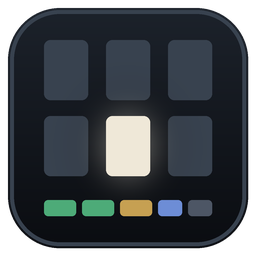
台割工房
取扱説明書
版 {{VERSION}}（第1段：いまの台割を丸ごと置き換える土台）
{{DATE}}
もくじ
- 1台割工房でできること
- 2入れ方
- 3開き方・閉じ方
- 4画面の見方
- 5進行とセリフ
- 6ページを選ぶ・並べる
- 7空白と待ち受け
- 8原画と完成
- 9除外と隔離
- 10読む（原寸で送る）
- 11ファイルの変化への追従
- 12書き出し
- 13元に戻す・バックアップ
- 14いまの台割（v2）からの引っ越し
- 15キー操作の一覧
- 16困ったとき
- 17これから入るもの
1. 台割工房でできること
100ページを超える生成画像マンガを、「順番」「進行」「セリフ」の3つで迷わず回すための道具です。
- 入口はフォルダごとに1つ。画像フォルダの「台割.daiwari」をダブルクリックすると、専用のウィンドウで開きます。閉じれば終わり、入力はその場で保存されています。
- ファイルが変わっても見失いません。フォルダを常に見張り、絵そのもの（画素）の指紋で追いかけます。番付工房でリネームとメタデータ削除をしても、台詞工房で保存しても、ページの紐付けは切れません。
- 何をしても戻せます。元に戻す／やり直しと、世代つきの自動バックアップがあります。画像ファイルを消す機能は持っていません。
- セリフ・メモ・修正指示を分けて書けます。PageDown で、入力したまま次のページへ進めます。
自分のPCの中だけで動きます。本体は 127.0.0.1（自分のPC）でだけ待ち受け、起動のたびに合言葉を変えます。外へ何かを送ることはありません。
2. 入れ方
- ZIP の「許可」：ZIP を右クリック →「プロパティ」→ 下のほうの「許可する」にチェック → OK。ネットから落としたファイルの印を外します（外さないと setup.bat が止められることがあります）。
- 置き場所：ZIP を展開して「台割工房」フォルダを好きな場所に置きます（例：ドキュメント\ツール\台割工房）。あとで移したときは、移した先で setup.bat をもう一度実行してください。
- setup.bat をダブルクリック：管理者の権限は要りません。次の4つをします。
- Python（3.10 以上）と Pillow を確かめ、Pillow が無ければ入れる
- 「台割.daiwari」をダブルクリックで開けるようにする（アイコンも付きます）
- フォルダの右クリック「送る」と、デスクトップに「台割工房」を足す
- 古い「台割を開く.bat」からも開けるよう、中継を置く
| 入っているもの | 中身 |
|---|
| 台割工房.pyw | 本体。画面も処理もこの1ファイル |
| 台割工房.ico | アイコン（各フォルダの 台割.daiwari の絵にも使う） |
| setup.bat ／ uninstall.bat | 初回のセットアップ／関連付けとショートカットを外す |
| 取扱説明書.pdf | この説明書 |
| はじめにお読みください.txt | 入れ方と、いまの台割からの引っ越しの要点 |
動く環境：Windows 10 / 11、Python 3.10 以上、Pillow、Microsoft Edge（無ければ既定のブラウザのタブで開きます）。
3. 開き方・閉じ方
| こんなとき | こうする |
|---|
| 初めてのフォルダ | 画像フォルダを右クリック →「送る」→「台割工房」。Windows 11 では、右クリックのいちばん下の「その他のオプション」の中にあります。デスクトップの「台割工房」アイコンにフォルダを落としても同じです。フォルダに「台割.daiwari」ができて開きます。 |
| 2回目から | フォルダの「台割.daiwari」をダブルクリック。 |
| 同じフォルダをもう一度開いた | 開いているウィンドウが前に出るだけです。別のフォルダなら、同時にいくつでも開けます。 |
| フォルダを移した・コピーした・名前を変えた | そのまま開けます。場所はどこにも記録していません。 |
| 終わるとき | ウィンドウを閉じるだけ。黒いコンソール窓は出ません。 |
フォルダの中には、次のものができます。
| 名前 | 中身 |
|---|
| 台割.daiwari | 管理データ（ページの順・進行・セリフなど。人が読める JSON）。これが入口です |
| .daiwari\ | サムネイル・バックアップ・記録（log.txt）。消しても管理データは失われません（バックアップは消えます） |
| 未使用\ | 隔離した絵の置き場（番付工房と同じ名前） |
| 書き出し\ | 書き出しをしたとき、その結果 |
4. 画面の見方
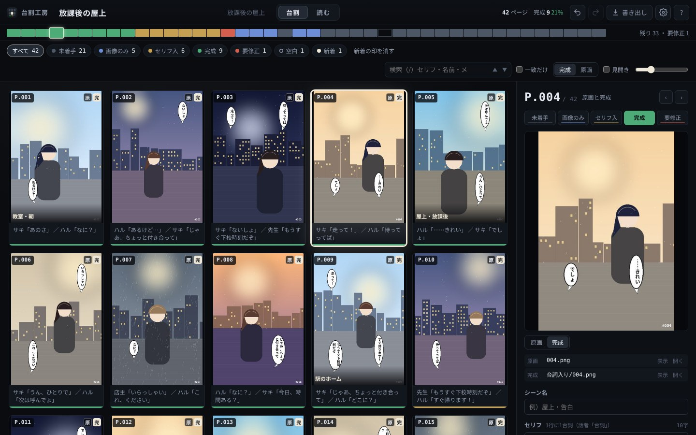
台割の画面。暗い机の上の台割表で、色は進行状況だけが持ちます。選んだページだけ紙のように光ります。
- 上の帯作品タイトル（クリックで書き換え）、フォルダ名（クリックでエクスプローラ）、「台割」「読む」の切り替え、ページ数と完成の割合、元に戻す／やり直し、書き出し、設定、キー操作の一覧。
- 進行ストリップ1ページが1本。色が進行、枠だけのものは空白、斜線は絵が見つからないページです。クリックでそのページへ飛びます。
- 絞り込み進行ごとのボタン（空白・待ち受け・新着・見つからない も）、検索（/）、一致だけ出す、一覧で見せる絵（完成／原画）、見開き、サムネイルの大きさ（Ctrl+ホイールでも）。
- 一覧左上から右へ、P.001 から順に並びます。カードの右上の「原」「完」は、原画と完成があるかどうか（白く塗ってある方が、いま見せている絵）。下にシーン名とセリフの頭、赤い字は修正指示、いちばん下の色の帯が進行、「新」は新しく来た絵です。
- 右の編集欄選んだページの進行・プレビュー・ファイル・シーン名・セリフ・メモ・修正指示。
5. 進行とセリフ
進行は5段
| キー | 進行 | 目安 |
|---|
| 1 | 未着手 | まだ何もしていない |
| 2 | 画像のみ | 絵は決まった。セリフはまだ |
| 3 | セリフ入 | 台詞工房でセリフを入れた |
| 4 | 完成 | このページは仕上がり |
| 5 | 要修正 | 直すところがある（修正指示に書く） |
選んでいるページ（何ページでも）に、キーか編集欄のボタン、右クリックの上段の色で付けます。完成の絵（台詞入り）が来ると、未着手・画像のみのページは自動で「セリフ入」になります（設定で切れます）。
文字は3つの欄に分けて書く
| 欄 | 書くこと | 例 |
|---|
| シーン名 | 任意の見出し。カードの下に出ます | 屋上・告白 |
| セリフ | 1行に1台詞。話者「台詞」と書いておくと、のちの版で話者を拾えます | サキ「あのさ」 |
| メモ | ト書き・演出・自分用の覚え書き | 引きの絵。逆光 |
| 修正指示 | 何を直すか。カードに赤い字で出ます | 右手の指が6本 |
- 書いたそばから保存されます（1秒以内）。保存のボタンはありません。
- PageDown／PageUp で、入力したまま次／前のページの同じ欄へ移れます。台本を上から順に詰めるときに便利です。
- セリフ欄の右上に字数が出ます（「」の中を数えます）。目安を超えると赤くなります（設定 →「そのほか」で変えられます）。
6. ページを選ぶ・並べる
選ぶ
- クリックで1枚、Shift+クリックで範囲、Ctrl+クリックで1枚ずつ足す・外す。Ctrl+A ですべて。
- 矢印キーで移動（Shift+矢印で範囲を広げる）、Home／End で最初と最後。
- 選んだまとまりに、進行・移動・除外・隔離をまとめて掛けられます。
並べる
- ドラッグ：選んだページをまとめて動かせます。光る線のところへ入ります。
- キー：Ctrl+←→ で1つずつ、Ctrl+↑↓ で1段ずつ。
- 右クリック →「動かす」：先頭へ・末尾へ・1つ前へ・1つ後ろへ・番号を指定。
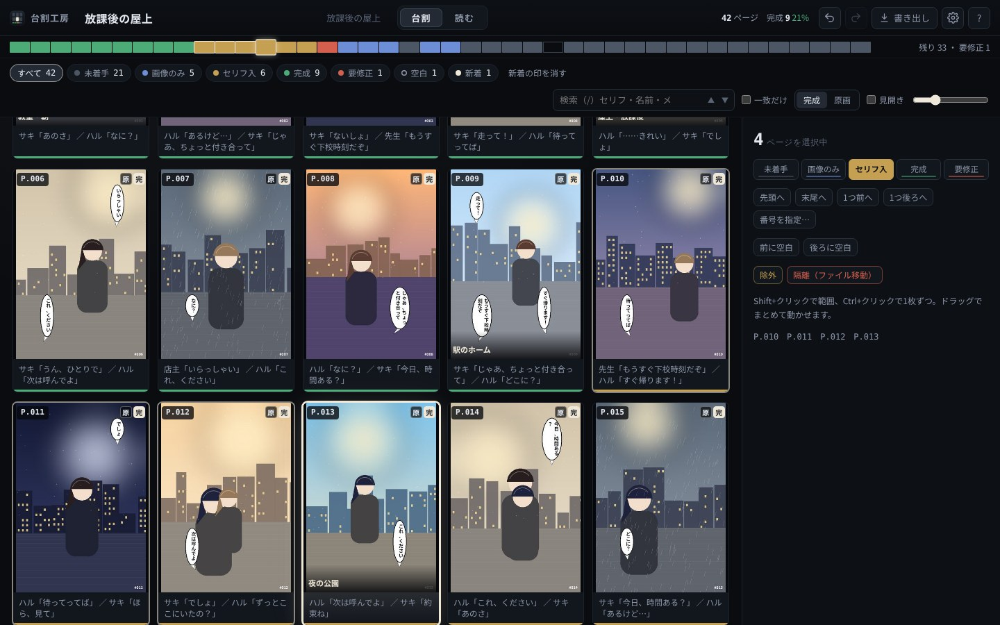
4ページを選んだところ。右の欄から、まとめて進行を付けたり動かしたりできます。
右クリック
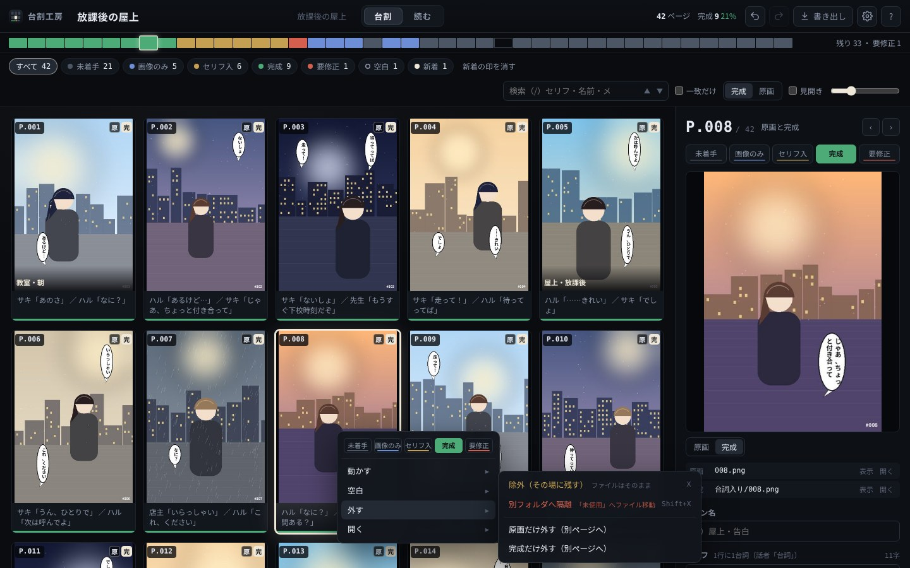
上段に進行の5色、その下を「動かす」「空白」「外す」「開く」にまとめ、細かい項目は横に開きます。
7. 空白と待ち受け
「この間に1枚足りない」と思ったら、先に空白を入れておき、絵ができたらそこへ入れます。
- I で後ろに、Shift+I で前に空白を入れます。空白にもシーン名・セリフ・メモを書けます。Delete で空白を消します（絵のあるページは消せません）。
- 待ち受け：空白に「待ち受け」の印を付けると、次にフォルダへ来た絵がそこへ入ります。待ち受けが複数あれば、ページの順に埋まります。生成して保存するだけで、台割の決まった場所に入ります。
- ここに絵を入れる…：空白を選んで押すと、一覧から絵を選べます（新しく来た絵が先頭）。選んだ絵のページが空白の場所へ移ります。
- 一覧の絵を、空白の真ん中へドラッグしても入ります。
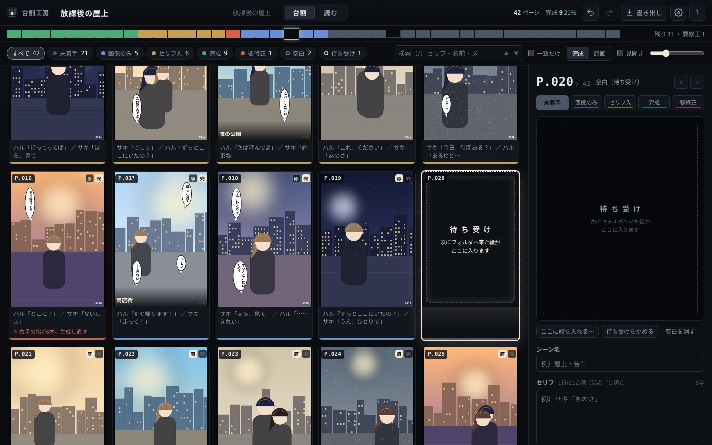
待ち受けの空白（P.020）。フォルダに次の絵が来ると、ここへ入って「新」の印が付きます。
エクスプローラから絵を落として取り込むのは第2段で入ります。いまは、画像フォルダへコピーしてください（待ち受けがあればそこへ入ります）。
8. 原画と完成
1ページは1つの「枠」で、原画（生成した元の絵）と完成（セリフを入れた絵）を1枚ずつ持ちます。差し替える前の完成は「旧版」として残ります。
完成の見分け方
| こういう絵 | 扱い |
|---|
| 台詞入り\017.png | 台詞工房のフォルダ作業の保存。017.png のページの完成になります |
| 017_V2.png、017_V3.png … | 台詞工房のふだんの保存。番号の大きい方が完成、前の版は旧版になります |
| 017_s.png など | 末尾が _s・_serif・_fin・_セリフ など（設定 →「完成の見分け」で変えられます） |
- 一覧と「読む」で見せる絵は、完成を優先するか原画を優先するかを選べます（V で切り替え）。編集欄のプレビューでも「原画／完成」を切り替えられます。
- 組み合わせを直す：右クリック →「外す」→「原画だけ外す」「完成だけ外す」で、その絵をすぐ後ろの別のページに分けます。逆に、1枚ずつのページを2つ選ぶと「2枚を原画と完成の組にする」が出ます。
- 旧版に戻す：編集欄のファイルの一覧で、旧版の「完成に」を押します。
9. 除外と隔離
| 除外（X） | 隔離（Shift+X） |
|---|
| 台割から | 外す | 外す |
| ファイル | そのまま（フォルダに残る） | 「未使用」フォルダへ移す |
| 戻し方 | 元に戻す、または 設定 →「除外した絵」 | 元に戻す、または 設定 →「隔離した絵」。隔離したときのセリフとメモも戻ります |
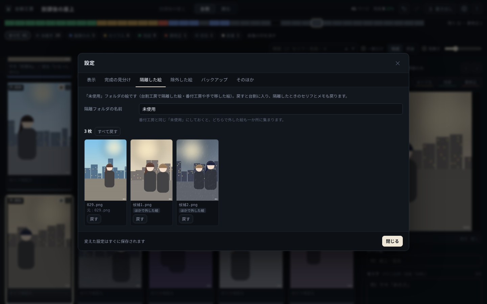
設定 →「隔離した絵」。番付工房や手で「未使用」へ移した絵も、ここから戻せます。
10. 読む（原寸で送る）
Enter（またはカードのダブルクリック、上の「読む」）で、選んだページを原寸で開きます。送りながら 1〜5 で進行を付け、X で除外、Shift+X で隔離できます。Esc で台割へ戻ります。
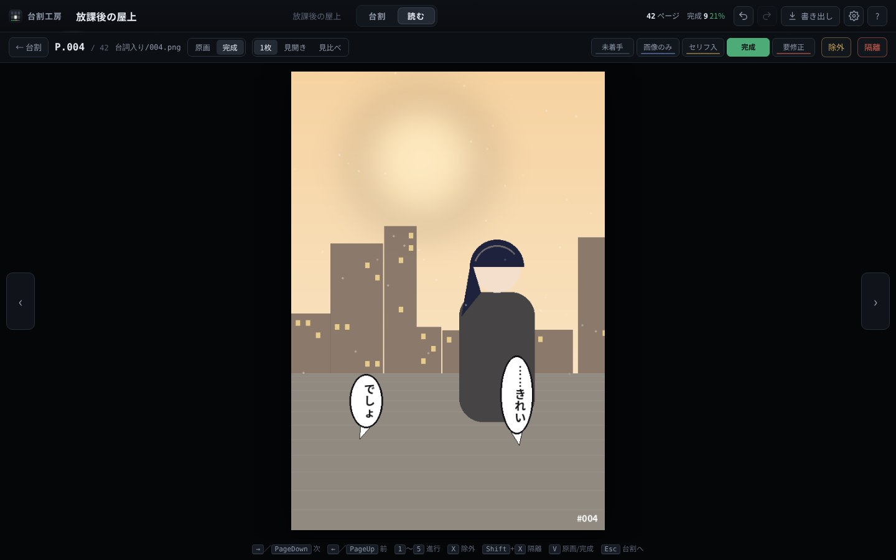
1枚。→／PageDown で次、←／PageUp で前。ホイールでも送れます。
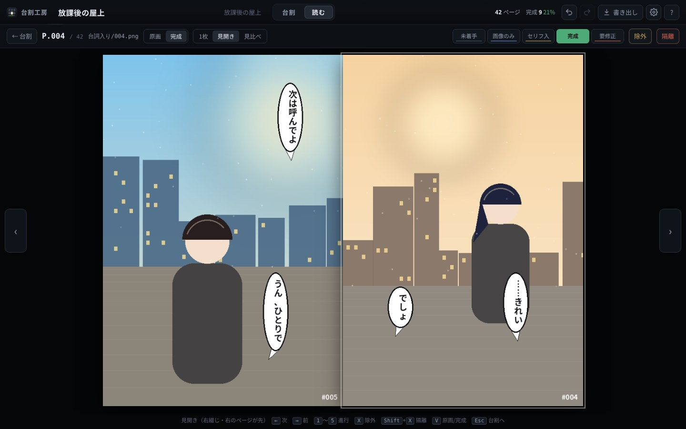
見開き（確認用）。右綴じなので右のページが先、← が次です。1ページ目を単独にするかは設定で。
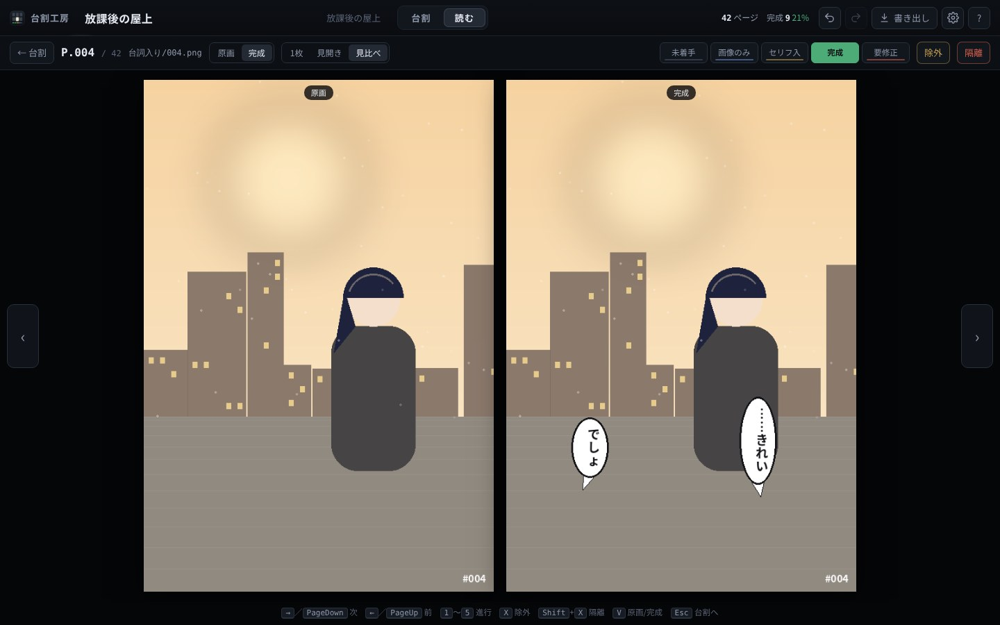
見比べ。原画と完成を左右に並べて、セリフで絵が隠れていないかを確かめられます。
一覧も見開きで並べられます（上の「見開き」）。右綴じで、右上から左へ並びます。縦スクロールで続けて読む表示（pixiv での見え方）は第2段で入ります。
11. ファイルの変化への追従
台割工房はフォルダを常に見張り、絵が増えた・消えた・書き換わった・名前が変わったことを、数秒のうちに画面へ出します。名前が残っているあいだは名前で、名前が消えたときだけ絵の中身で追いかけます。
| こうしたら | 台割工房は |
|---|
| フォルダに絵を足した | 待ち受けの空白があればそこへ、無ければ末尾へ。「新」の印を付けます |
| 台詞工房のフォルダ作業で保存した | そのページの完成に入ります |
| 台詞工房で「名前_V2.png」と保存した | 「名前.png」のページの完成に入ります。_V3 が来たら _V2 は旧版へ |
| 同じ名前で上書きした | ページはそのまま。絵だけその場で差し替わります |
| 名前だけ変えた | 同じ絵として追います（自動） |
| 名前を変え、メタデータも消した（番付工房） | 画素が同じなので、同じ絵として追います（自動） |
| 名前も絵も変えた（JPEG にした・描き直した） | 似た絵を探して「P.012 の差し替えですか？」と聞きます。違えば新しいページのまま |
| 消した・フォルダの外へ移した | ページは「見つかりません」として残ります。セリフとメモもそのまま。戻せば元通り |
| 「未使用」へ自分で移した（番付工房で外した絵も） | 隔離と同じ扱い。設定の一覧から戻せます |
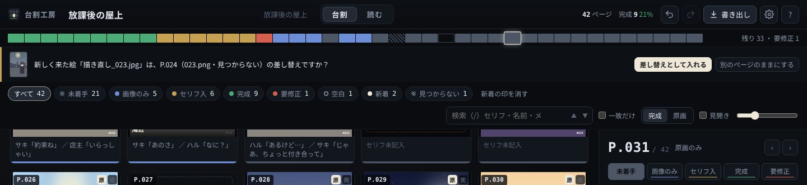
名前も中身も変わった絵が来たとき。似た絵の候補は自動では結び付けず、必ず確かめてもらいます。
初めて開くときは、全部の絵を1枚ずつ読んで指紋とサムネイルを作ります（右上に「絵を読み込み中」と出ます。その間も画面は使えます）。2回目からは、変わった絵だけを読みます。
12. 書き出し
上の「書き出し」で、台割の順に別のフォルダへ連番でコピーします。元の画像には触りません。
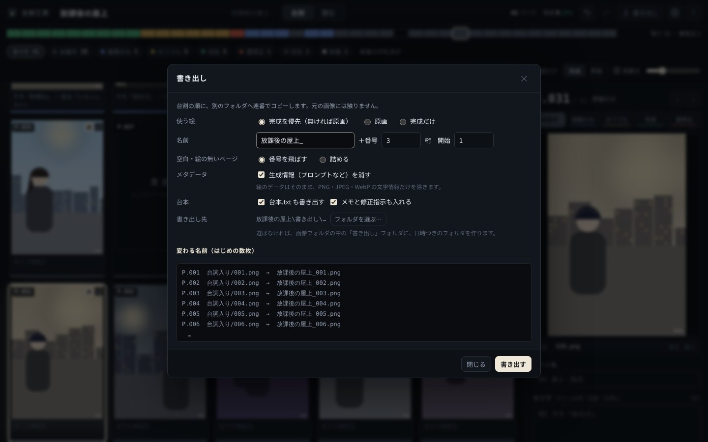
書き出しの窓。下に、変わる名前のはじめの数枚が出ます。
| 項目 | 選べること |
|---|
| 使う絵 | 完成を優先（無ければ原画）／原画／完成だけ |
| 名前 | 頭の文字＋番号（桁数と開始番号）。例：放課後の屋上_001.png |
| 空白・絵の無いページ | 番号を飛ばす／詰める |
| メタデータ | 生成情報（プロンプト・ワークフローなど）を消す。絵のデータはそのまま |
| 台本 | 台本.txt も書き出す（ページ番号・新しい名前・シーン名・セリフ。メモと修正指示も入れられます） |
| 書き出し先 | 画像フォルダの中の「書き出し」に日時つきのフォルダを作る／好きなフォルダを選ぶ |
台割の順で元のファイルの名前そのものを付け直す「連番リネーム」は、第3段で入ります。
13. 元に戻す・バックアップ
- Ctrl+Z で元に戻す、Ctrl+Y でやり直し。開いている間なら200手まで戻せます。隔離（ファイルの移動）も戻ります。続けて打った文字は1手にまとまります。
- 除外・隔離などをしたときに出る知らせの「元に戻す」でも戻せます。
- 台割.daiwari は、直近20回分と日ごとの7日分を .daiwari\backup に自動で残します。設定 →「バックアップ」から、その時点へ戻せます（戻したあとでも、元に戻す で今の状態へ帰れます）。
- 台割.daiwari が壊れて読めなかったときは、いちばん新しいバックアップから自動で戻し、画面でお知らせします。
14. いまの台割（v2）からの引っ越し
何もしなくて大丈夫です。v2 で使っていたフォルダを開くと、自動で引っ越します。
- .daiwari.json（v2）を読んで 台割.daiwari（v3）を作ります。元のファイルは .daiwari\backup へ移します。
- ページの順・原画と完成の組・空白・除外・メモを引き継ぎます。v2 のあとで「台詞入り」に保存した完成も、このとき拾います。
- v2 のメモは、まず「セリフ」欄に入ります。「」を含む行をセリフ、それ以外をメモに振り分けるかを1回だけ聞きます。
- v2 の隔離フォルダ「_除外」があれば、中身を「未使用」へまとめるかを1回だけ聞きます。まとめなくても、隔離した絵として扱います。
- 各フォルダの古い「台割を開く.bat」は、そのまま使えます（setup.bat が置いた中継から、台割工房が開きます）。
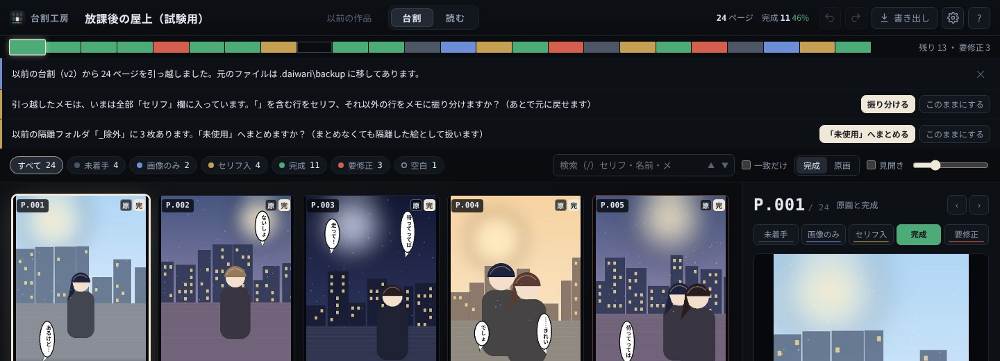
引っ越した直後の画面。上のお知らせから、振り分けとまとめを選べます（どちらもあとで元に戻せます）。
15. キー操作の一覧
どの画面でも、同じキーが同じことをします。矢印は読む向きに合わせ、PageDown／PageUp はいつでも次／前です。
| キー | 動き |
|---|
| PageDown／PageUp | 次／前のページ（入力中でも効く。同じ欄のまま次のページへ） |
| →／← | → が次、← が前。見開き表示のときだけ、右綴じに合わせて ← が次 |
| ↑／↓ | 上下の段へ（Shift で範囲を選ぶ） |
| Home／End | 最初／最後のページ |
| 1〜5 | 進行（未着手・画像のみ・セリフ入・完成・要修正） |
| Ctrl+矢印 | ページを動かす（← → は1つずつ、↑ ↓ は1段ずつ） |
| I／Shift+I | 後ろ／前に空白 |
| Delete | 空白を消す |
| X／Shift+X | 除外（ファイルはそのまま）／隔離（「未使用」へ移す） |
| V | 原画と完成の切り替え |
| Enter | 原寸で開く（読む） |
| Ctrl+Z／Ctrl+Y | 元に戻す／やり直し |
| Ctrl+A | すべて選ぶ |
| / | 検索（Enter で次の一致、Shift+Enter で前） |
| ? | キー操作の一覧を出す |
| Esc | 入力を抜ける・閉じる・選択を1枚にする・絞り込みを解く |
16. 困ったとき
| こんなとき | こうしてください |
|---|
| setup.bat が止められた | ZIP の「許可する」にチェックしてから、展開し直してください（2章）。 |
| 「Pillow が入っていません」と出る | setup.bat をもう一度実行してください（インターネットにつながっている必要があります）。 |
| 台割.daiwari をダブルクリックしても開かない | 台割工房のフォルダを移したなら、移した先で setup.bat をもう一度。それでもだめなら、そのフォルダの .daiwari\log.txt をご確認ください。 |
| 「本体とつながりません」と出た | ウィンドウを閉じて、台割.daiwari を開き直してください。入力はそれまでに保存されています。 |
| 表示がフォルダの中身と合わない | ふだんは自動で見張っています。合わないときだけ、設定 →「そのほか」→「フォルダを読み直す」。 |
| ページが2倍に増えた・紐付けが切れた | まず Ctrl+Z。閉じたあとなら、設定 →「バックアップ」から戻せます。 |
| 外部アプリで開きたい | 設定 →「そのほか」の「外部アプリ」にコマンドを入れると、右クリック →「開く」→「外部アプリで開く」で使えます。空なら Windows の既定のアプリで開きます。 |
| やめたい（アンインストール） | uninstall.bat を実行すると、関連付けとショートカットを外します。各フォルダの 台割.daiwari とバックアップは残ります。 |
画像を消す機能はありません。台割工房がファイルを動かすのは「隔離」（未使用へ移す）だけで、これも元に戻せます。書き出しは別のフォルダへコピーするだけです。
17. これから入るもの
第2段 台本全ページのセリフを1画面で書ける「台本」の画面、話者の自動認識と字数の警告、台本の書き出しと取り込み、エクスプローラからのドロップ取り込み、差し替えと旧版、話・章の区切り、縦スクロール表示
第3段 つなぐ台詞工房でそのページを直接開く、台割の順で連番リネーム（原画と完成は同じ番号のまま・取り消し可）、生成情報の表示と ComfyUI での開き直し、本棚、段取工房のカット表の取り込み